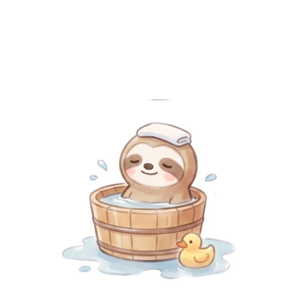
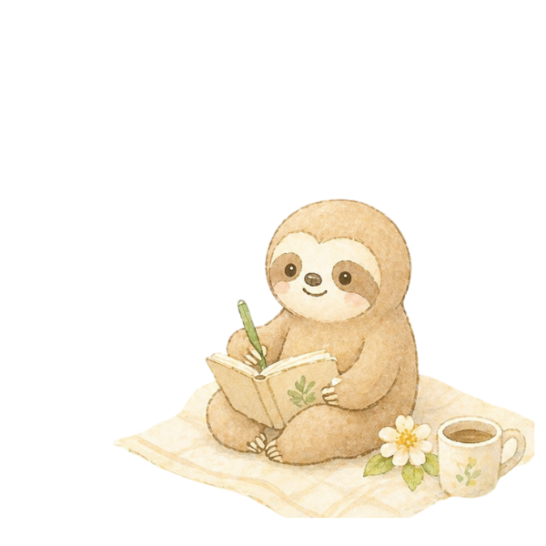
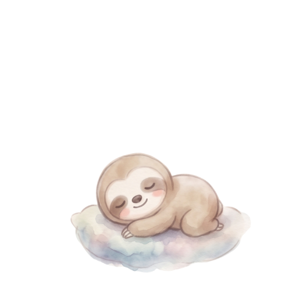

MY SATISFACTION MAP
わたしの満足度マップ
🌷 時間とお金を、もっと幸せに使うためのジャーナリング
正解を探す時間ではなく、自分の心が反応するものを集める時間です。
うまく書こうとしなくて大丈夫。思いつくままに書いてみてね。
うまく書こうとしなくて大丈夫。思いつくままに書いてみてね。
✍️ そのまま書き込めます。内容は自動でこの端末に保存されます（LocalStorage）

STEP 1 最近、満たされた瞬間
最近「これ、選んでよかった」と感じたことを書き出してみましょう。
買ってよかったもの／使ってよかった時間／行ってよかった場所／食べて幸せだったもの／会えてよかった人／やってよかったこと／あえてやめてよかったこと
💭 最近、心がふっと満たされた瞬間はいつでしたか？

STEP 2 気持ち別に見つける
自分の心が反応するものを、気持ち別に書き出してみましょう。
✨ ワクワクするものこれから楽しみになるもの、気分が上がるもの
🫧 ここちよいもの安心する空間、好きな香り、肌ざわり、音、景色
☀️ 元気が出るもの前向きになれる人、場所、言葉、習慣
🌿 心がゆるむものほっとする時間、ひとり時間、何もしない時間
🍰 お腹を満たすおいしいもの食べると幸せを感じるもの、また食べたいもの

STEP 3 お金の使い方から見つける
金額の大小ではなく、「満足度」に注目して書いてみましょう。
0円で満たされること
500円以内の小さな幸せ
少し奮発しても満足度が高いもの
予算を決めて楽しみたいこと
💴 お金を使ったあとに「これはよかった」と思えるものは？

STEP 4 プライスレスな満足
お金では買えないけれど、自分にとって大切な満足を書き出します。
誰かとの会話／家族やペットとの時間／朝の空気／静かな夜／感謝された瞬間／自分らしくいられる場所／安心して話せる人
🕊 自分にとって、何より満たされるプライスレスな時間は？

STEP 5 制限なくできるとしたら？
一度、時間・お金・場所の制限を外して考えてみましょう。
どこに行きたい？／何を食べたい？／誰と過ごしたい？／どんな暮らしをしたい？／何に時間を使いたい？／どんな自分でいたい？
🌈 制限がないとしたら、今の自分は何を選びたいですか？

STEP 6 わたしの満足度マップ
ここまで書いた中から、これからの自分に取り入れたいものを選びます。
日常に入れたい小さな満足
月1回、自分に許可したいこと
今年後半のやりたいことリストに入れたいこと
もう我慢しすぎなくていいこと
🌷 これからの自分に、どんな満足を許可してあげたいですか？

満足度マップは、一度で完成しなくて大丈夫。
暮らしの中で、少しずつ更新していこうね🌷🦥